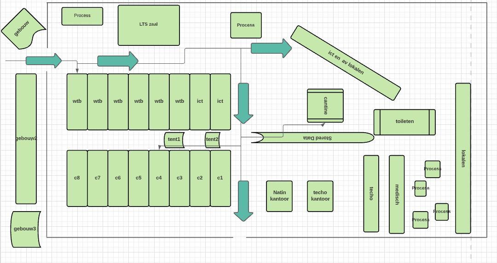
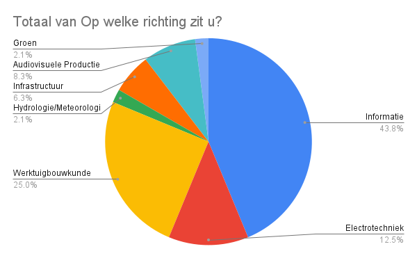
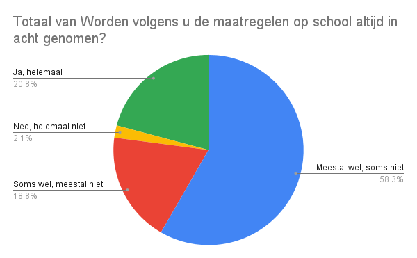
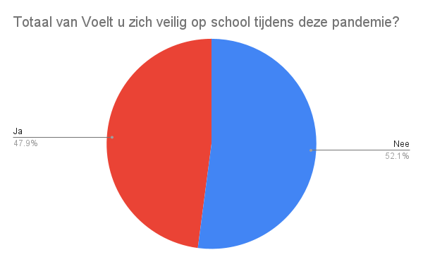
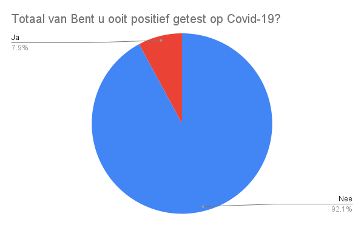
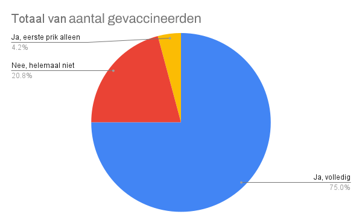

Procedures voor het betreden van het Natin
het is zoals voor studenten als leerkrachten geldig om zich aan bepaalde maatregelen te houden in de volgende orde:
- verplicht mond/neuskap op hebben
- temperatuur opnemen
- handen reinigen
- pijltjes volgen naar je lokaal toe
- verder dien je nog je neus/mondkap op te hebben en je handen regelmatig ontsmetten


Plattegrond van het Natin
Onderzoeks Resultaten
Een enquete gedaan door ons over Covid-19 op het NATIN, heeft de volgende resultaten opgeleverd. Wij hebben 48 participanten ondervraagd.




